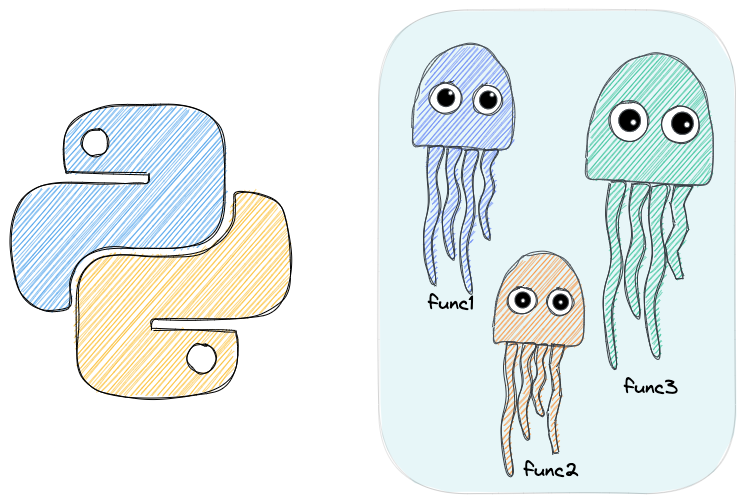

2.6. Classes#

2.6.1. Inheritance in Python#
Have you ever had multiple classes that have similar attributes and methods? In the code below, the class Dachshund and Poodle have similar attributes (color) and methods (show_info).
class Dachshund:
def __init__(self, color: str):
self.color = color
def show_info(self):
print(f"This is a Dachshund with {self.color} color.")
class Poodle:
def __init__(self, color: str):
self.color = color
def show_info(self):
print(f"This is a Poodle with {self.color} color.")
bim = Dachshund("black")
bim.show_info()
This is a Dachshund with black color.
If so, use inheritance to organize your classes. Inheritance allows us to define a parent class and child classes. A child class inherits all the methods and attributes of the parent class.
super().__init__ makes the child class inherit all the methods and properties from its parent.
In the code below, we define the parent class to be Dog and the child classes to be Dachshund and Poodle. With class inheritance, we avoid repeating the same piece of code multiple times.
class Dog:
def __init__(self, type_: str, color: str):
self.type = type_
self.color = color
def show_info(self):
print(f"This is a {self.type} with {self.color} color.")
class Dachshund(Dog):
def __init__(self, color: str):
super().__init__(type_="Dachshund", color=color)
class Poodle(Dog):
def __init__(self, color: str):
super().__init__(type_="Poodle", color=color)
bim = Dachshund("black")
bim.show_info()
This is a Dachshund with black color.
coco = Poodle("brown")
coco.show_info()
This is a Poodle with brown color.
Learn more about inheritance in Python here.
2.6.2. Abstract Classes: Declare Methods without Implementation#
Sometimes you might want different classes to use the same attributes and methods. But the implementation of those methods can be slightly different in each class.
A good way to implement this is to use abstract classes. An abstract class contains one or more abstract methods.
An abstract method is a method that is declared but contains no implementation. The abstract method requires subclasses to provide implementations.
from abc import ABC, abstractmethod
class Animal(ABC):
def __init__(self, name: str):
self.name = name
super().__init__()
@abstractmethod
def make_sound(self):
pass
class Dog(Animal):
def make_sound(self):
print(f'{self.name} says: Woof')
class Cat(Animal):
def make_sound(self):
print(f'{self.name} says: Meows')
Dog('Pepper').make_sound()
Cat('Bella').make_sound()
Pepper says: Woof
Bella says: Meows
2.6.3. classmethod: What is it and When to Use it#
When working with a Python class, if you want to create a method that returns that class with new attributes, use classmethod.
Classmethod doesn’t depend on the creation of a class instance. In the code below, I use classmethod to instantiate a new object whose attribute is a list of even numbers.
class Solver:
def __init__(self, nums: list):
self.nums = nums
@classmethod
def get_even(cls, nums: list):
return cls([num for num in nums if num % 2 == 0])
def print_output(self):
print("Result:", self.nums)
# Not using class method
nums = [1, 2, 3, 4, 5, 6, 7]
solver = Solver(nums).print_output()
Result: [1, 2, 3, 4, 5, 6, 7]
solver2 = Solver.get_even(nums)
solver2.print_output()
Result: [2, 4, 6]
2.6.4. getattr: a Better Way to Get the Attribute of a Class#
If you want to get a default value when calling an attribute that is not in a class, use getattr() method.
The getattr(class, attribute_name) method simply gets the value of an attribute of a class. However, if the attribute is not found in a class, it returns the default value provided to the function.
class Food:
def __init__(self, name: str, color: str):
self.name = name
self.color = color
apple = Food("apple", "red")
print("The color of apple is", getattr(apple, "color", "yellow"))
The color of apple is red
print("The flavor of apple is", getattr(apple, "flavor", "sweet"))
The flavor of apple is sweet
print("The flavor of apple is", apple.sweet)
---------------------------------------------------------------------------
AttributeError Traceback (most recent call last)
/tmp/ipykernel_337430/3178150741.py in <module>
----> 1 print("The flavor of apple is", apple.sweet)
AttributeError: 'Food' object has no attribute 'sweet'
2.6.5. __call__: Call your Class Instance like a Function#
If you want to call your class instance like a function, add __call__ method to your class.
class DataLoader:
def __init__(self, data_dir: str):
self.data_dir = data_dir
print("Instance is created")
def __call__(self):
print("Instance is called")
data_loader = DataLoader("my_data_dir")
# Instance is created
data_loader()
# Instance is called
Instance is created
Instance is called
2.6.6. Static method: use the function without adding the attributes required for a new instance#
Have you ever had a function in your class that doesn’t access any properties of a class but fits well in a class? You might find it redundant to instantiate the class to use that function. That is when you can turn your function into a static method.
All you need to turn your function into a static method is the decorator @staticmethod. Now you can use the function without adding the attributes required for a new instance.
import re
class ProcessText:
def __init__(self, text_column: str):
self.text_column = text_column
@staticmethod
def remove_URL(sample: str) -> str:
"""Replace url with empty space"""
return re.sub(r"http\S+", "", sample)
text = ProcessText.remove_URL("My favorite page is https://www.google.com")
print(text)
My favorite page is
2.6.7. Property Decorator: A Pythonic Way to Use Getters and Setters#
To define the behaviors that are executed when a class attribute is set, use the property decorator.
In the code below, the getter method gets the value of the color attribute and the setter method restricts the color attribute modification to string data types only.
class Fruit:
def __init__(self, name: str, color: str):
self.name = name
self._color = color
@property # getter method
def color(self):
return self._color
@color.setter # setter method
def color(self, value):
print("Setting value of color...")
if isinstance(value, str):
self._color = value
else:
raise AttributeError("Fruit's color must be a string.")
fruit = Fruit("apple", "red")
fruit.color
'red'
fruit.color = "yellow"
fruit.color
Setting value of color...
'yellow'
fruit.color = 1
Setting value of color...
---------------------------------------------------------------------------
AttributeError Traceback (most recent call last)
/var/folders/5w/fg65_rp17lz39z89p0nkv8ch0000gn/T/ipykernel_78260/1033431134.py in <cell line: 1>()
----> 1 fruit.color = 1
/var/folders/5w/fg65_rp17lz39z89p0nkv8ch0000gn/T/ipykernel_78260/3888926808.py in color(self, value)
14 self._color = value
15 else:
---> 16 raise AttributeError("Fruit's color must be a string.")
17
18
AttributeError: Fruit's color must be a string.
2.6.8. __str__ and __repr__: Create a String Representation of a Python Object#
If you want to create a string representation of an object, add __str__ and __repr__.
__str__ shows readable outputs when printing the object. __repr__ shows outputs that are useful for displaying and debugging the object.
class Food:
def __init__(self, name: str, color: str):
self.name = name
self.color = color
def __str__(self):
return f"{self.color} {self.name}"
def __repr__(self):
return f"Food({self.color}, {self.name})"
food = Food("apple", "red")
print(food) # str__
red apple
food # __repr__
Food(red, apple)
2.6.9. __add__: Add the Attributes of Two Class Instances#
If you want to add the attributes of class instances, use __add__. In the code below, I use __add__ to add the ages of two class instances bim and coco when calling bim + coco.
class Dog:
def __init__(self, age: int):
self.age = age
def __add__(self, other):
return self.age + other.age
class Cat:
def __init__(self, age: int):
self.age = age
def __add__(self, other):
return self.age + other.age
bim = Dog(age=5)
coco = Cat(age=2)
bim + coco
7
2.6.10. Optimizing Memory Usage in Python with Slots#
Show code cell content
!pip install memory_profiler
In Python, objects can store their attributes in a flexible dictionary-like structure that can use a lot of memory. Slots make your objects more memory-efficient by reserving space for their attributes ahead of time.
The code below shows that using slots significant reduces the memory usage.
# without_slot.py
from random import randint
from memory_profiler import profile
class Dog:
def __init__(self, age):
self.age = age
@profile
def main():
return [Dog(age=randint(0, 30)) for _ in range(100000)]
if __name__ == "__main__":
main()
$ python -m memory_profiler without_slot.py
Filename: without_slot.py
Line # Mem usage Increment Occurrences Line Contents
=============================================================
10 41.6 MiB 41.6 MiB 1 @profile
11 def main():
12 57.8 MiB 16.2 MiB 100003 return [Dog(randint(0, 30)) for _ in range(100000)]
# with_slot.py
from random import randint
from memory_profiler import profile
class Dog:
# defining slots
__slots__ = ["age"]
def __init__(self, age):
self.age = age
@profile
def main():
return [Dog(age=randint(0, 30)) for _ in range(100000)]
if __name__ == "__main__":
main()
$ python -m memory_profiler with_slot.py
Filename: with_slot.py
Line # Mem usage Increment Occurrences Line Contents
=============================================================
11 41.3 MiB 41.3 MiB 1 @profile
12 def main():
13 46.7 MiB 5.4 MiB 100003 return [Dog(randint(0, 30)) for _ in range(100000)]